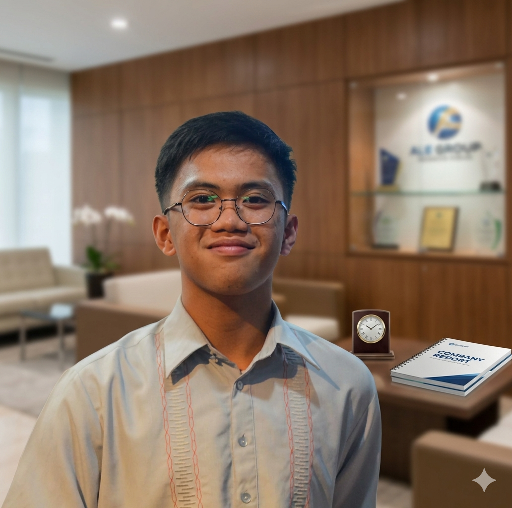

Observe
Study visual examples, forms, color, and everyday sources of inspiration.
Delivering fast, reliable support for email management, scheduling, research, and client communications so you can focus on business growth.

Experienced Virtual Assistant skilled in email and calendar management, data entry, customer communication, research, and administrative support.
Focused on helping businesses stay organized, save time, and improve productivity through reliable remote assistance.
Organize your inbox, prioritize messages, and prepare professional email responses.
Schedule meetings, manage appointments, and keep your day running smoothly.
Enter and organize information accurately across spreadsheets, CRMs, and databases.
Gather business insights, compare options, and summarize findings for fast decisions.
Respond to client requests and maintain high-quality communication with your audience.
Help with scheduling posts, monitoring engagement, and supporting your online presence.
Email & Inbox Management
Scheduling & Calendar Support
Data Entry & Reporting
Customer Communication
Educational Portfolio / 2026
BTLED-ICT Student | Creative Learner | Aspiring Educator
Welcome to my educational portfolio! This website showcases my creative works, digital design activities, technical explorations, and learning experiences throughout my journey as an ICT education student.
01 / About Me
I am Lian Mark Ola, a Bachelor of Technology and Livelihood Education student majoring in Information and Communications Technology.
I am interested in how creativity, visual communication, and technology can make learning more engaging. This portfolio is a space for me to document my experiments, improve my design thinking, and grow toward becoming an educator.
Strengthen my creativity, develop practical ICT skills, and learn how visual design can support effective teaching.
02 / Learning Journey
This portfolio documents my learning journey as a BTLED-ICT student. It contains the activities, creative outputs, and design explorations that helped me develop my skills in digital illustration, visual communication, and graphic design.
Study visual examples, forms, color, and everyday sources of inspiration.
Practice illustration and design through assigned creative activities.
Apply digital tools to refine ideas and understand design workflows.
Document challenges, progress, lessons, and goals for future learning.
03 / Creative Works
Select an activity to view its objectives, output, tools, and personal reflection.
04 / Exhibition
A visual collection of submitted artworks and activity outputs.
05 / Journal
Overall Reflection
Throughout these activities, I explored different ways to express ideas through art and digital design. From pencil sketches, color studies, and character work to vector graphics, logos, and posters, I practiced observing details, arranging visual elements, and refining my work. I learned that creativity takes patience and experimentation. As a BTLED-ICT student, I can use these skills to create clear, engaging visual materials and support learners in expressing their own ideas. This portfolio reflects my progress and encourages me to keep learning.
I practiced sketching and tracing, using color, arranging shapes, and combining typography with imagery. I am becoming more thoughtful about composition and how design choices communicate an idea.
Learning digital tools, keeping lines and shapes clear, and balancing color and layout challenged me. Trying, reviewing, and refining my work helped me become more patient with the creative process.
I can use these skills to make visual aids, posters, and digital learning materials. I can also guide students as they explore design tools, communicate ideas visually, and learn through revision.
06 / Tools & Skills
Vector exploration
Learning area
Learning area
Learning area
Learning area
Learning area
Learning area
Learning area